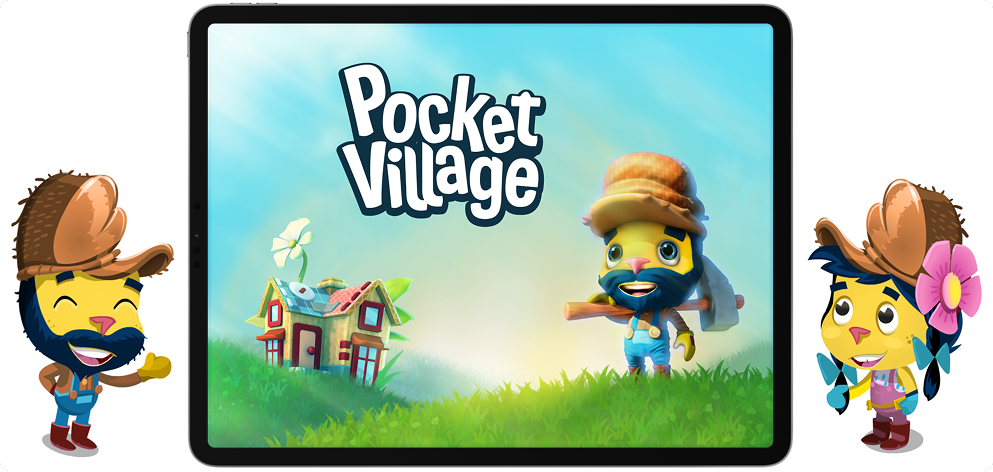

Overview
Pocket Village was a mobile simulation game by Wooga that blended building, crafting, and character interactions in a charming fantasy world. This project marked my transition from UI artist to UX designer — where I learned to think beyond visuals and design experiences that guide and delight players.
Challenge
While the game’s visuals were strong, players struggled to understand progression and key interactions. The challenge was to simplify complex systems while maintaining the game’s charm and style.
My Role
Initially joining as a UI Artist, I took on UX responsibilities as I saw opportunities to improve flow and usability. I created all of the game’s UI assets, mapped user journeys, and collaborated with the design team to enhance the player experience.
Key Responsibilities:
- Designed and implemented all in-game UI assets, icons, and menus.
- Defined UX flows, improving clarity, progression, and accessibility.
- Conducted player feedback analysis to identify usability pain points.
- Created tutorial and feedback systems for smoother onboarding.
- Collaborated closely with engineers to ensure seamless integration.
Design Highlights
- Visual Consistency: Built a cohesive visual language across all UI elements.
- Simplified Navigation: Reduced steps to complete core actions and improve flow.
- Onboarding Clarity: Enhanced tutorials that increased first-session retention.
- Player-Centric Iteration: Applied feedback loops that refined usability.
Results
- Improved onboarding completion rates by 20% in internal testing.
- Reduced UI-related confusion by 40% based on QA and player feedback.
- Boosted early retention by 12% after UX refinements.
- Featured on the Apple App Store in multiple regions, including Korea.
- Influenced new UX review practices later adopted by other Wooga projects.
Reflection
Pocket Village became a defining project in my journey — the moment I realized design is about empathy, clarity, and guidance, not just visuals. It shaped how I approach UX: creating experiences that feel natural, rewarding, and deeply human.
 Read more about Pocket Village
Read more about Pocket Village
 Back to My
Work
Back to My
Work